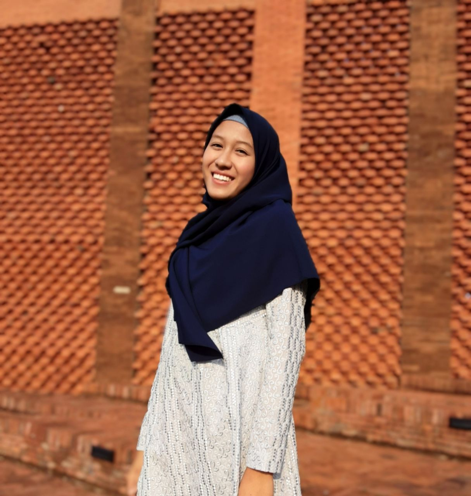

Aiko Nur Fajrin Diapati
Tangerang, Indonesia | aton.aiko@apps.ipb.ac.id
| linkedin.com/in/aikonfd | Portfolio
ABOUT ME
An undergraduate student at IPB University majoring in Computer Science who are really into UI/UX Design and
always wants to learn and try different projects from various fields. Throughout the past 2 years, I've had
the
wonderful opportunity to actively participate in several projects that have enriched my skills and
expertise.
I'm truly passionate about the product and human-centered designs, which has led me to create digital
product
interfaces that are highly functional and visually captivating. With organizational experiences ranging from
HRD
staff to becoming a Chief Secretariat Division, I led the Secretariat Division at the largest annual event
in
the Computer Science Student Association and successfully managed the ittoday.id website project.
EDUCATION
IPB University - Computer Science (2020-2024)
SMA IT Darul Quran Mulia - Science (2017-2020)
PROFESSIONAL EXPERIENCE
Bakrie Center Foundation - Product Designer Intern (Feb - Jun 2024)
- Successfully developed user flow, information architecture, low-fidelity and high-fidelity design, as
well
as a prototype of 49 features for desktop and mobile versions over 15 sprints with 17 features for
participants, 16 features for mentors, and 16 features for admins on the LEAD Indonesia website project.
- Carried out usability testing on stakeholders and users of the LEAD Indonesia website 9 times and
obtained
an overall score of 72.3 with a ‘Good’ predicate.
PERUMDA Tirta Pakuan Kota Bogor - UI/UX Designer Intern (Sep
-
Nov 2023)
- Engaged in discussions with Tirta Pakuan Asset Division stakeholders to identify user needs for a
comprehensive asset management website.
- Created a design system including colors, typography, and various interface elements and designed
highfidelity prototype using Figma tools.
ICT IPB University - UI Designer Intern (Jan - May 2023)
- Built experiences and interfaces for the ORSEN (Sports and Arts) website platform, specifically designed
for
managing bookings of sports fields or facilities at IPB University.
- Conducted thorough user research, created detailed wireframes, engaged in effective communication with
stakeholders, and developed style guides along with high-fidelity prototypes for the PKU website
(General
Competency Program) at IPB University.